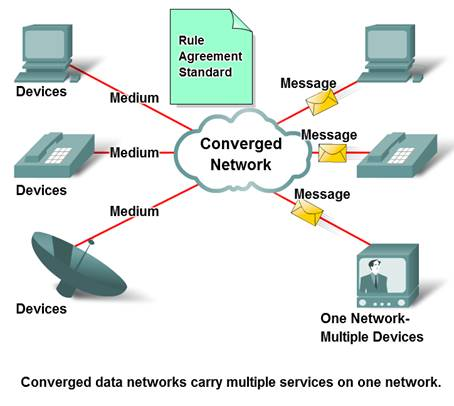

Converged networks
Technology advances are enabling us to consolidate these disparate networks onto one platform - a platform defined as a converged network. The flow of voice, video, and data traveling over the same network eliminates the need to create and maintain separate networks. On a converged network there are still many points of contact and many specialized devices - for example, personal computers, phones, TVs, personal assistants, and retail point-of-sale registers - but only one common network infrastructure.
 ___________________________________________________________
___________________________________________________________
Converged Networks
I. Intelligent Information Networks
The role of the network is evolving. The intelligent communications platform of tomorrow will offer so much more than basic connectivity and access to applications. The convergence of the different types of communications networks onto one platform represents the first phase in building the intelligent information network. We are currently in this phase of network evolution. The next phase will be to consolidate not only the different types of messages onto a single network, but to also consolidate the applications that generate, transmit, and secure the messages onto integrated network devices. Not only will voice and video be transmitted over the same network, the devices that perform the telephone switching and video broadcasting will be the same devices that route the messages through the network. The resulting communications platform will provide high quality application functionality at a reduced cost
II. Planning for the Future
The pace at which the development of exciting new converged network applications is occurring can be attributed to the rapid expansion of the Internet. This expansion has created a wider audience and a larger consumer base for whatever message, product or service can be delivered. The underlying mechanics and processes that drive this explosive growth have resulted in a network architecture that is both resilient and scalable. As the supporting technology platform for living, learning, working, and playing in the human network, the network architecture of the Internet must adapt to constantly changing requirements for a high quality of service and security